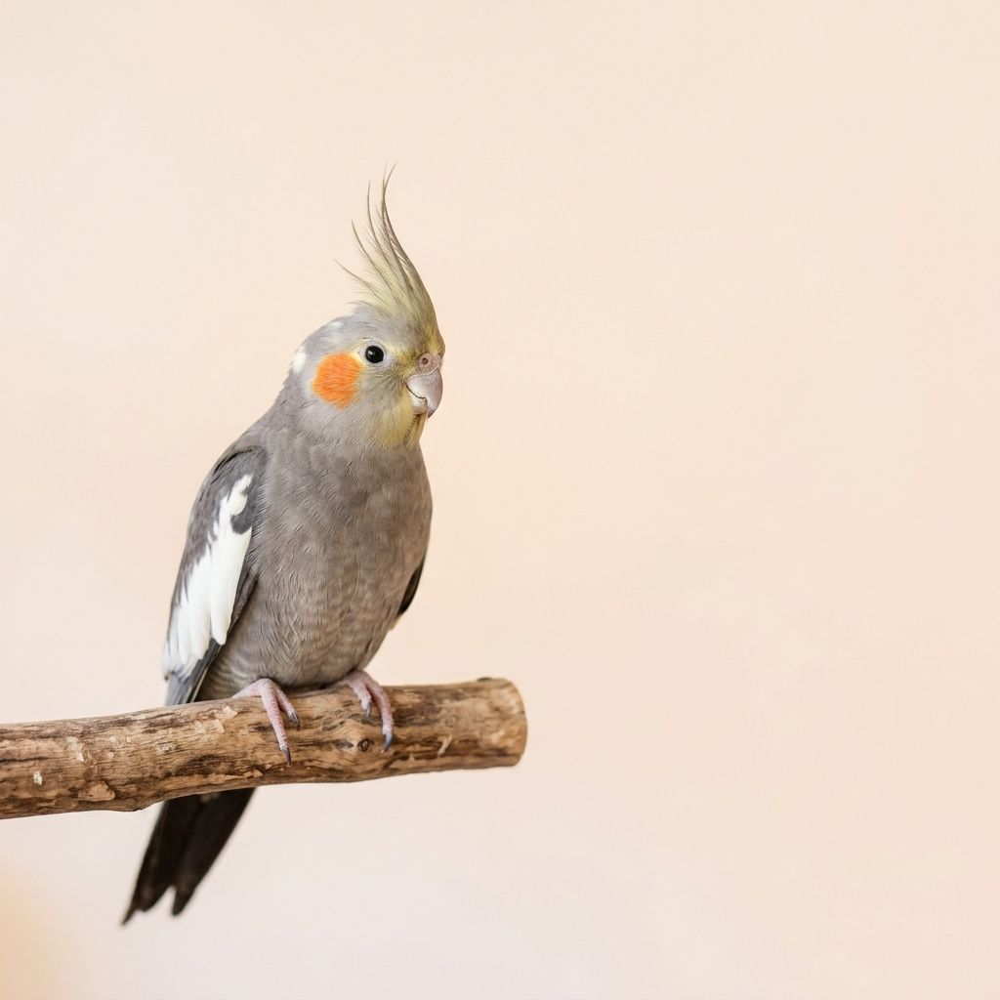
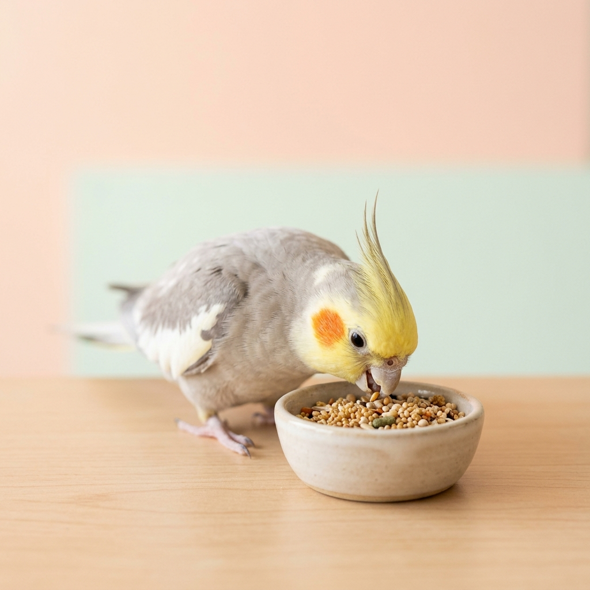
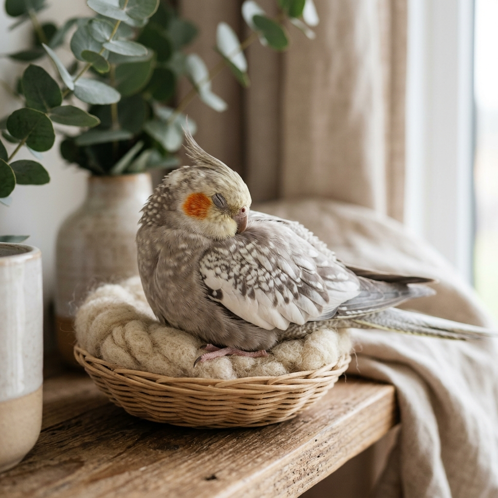

愛らしい
オカメインコとの暮らし
オレンジ色のほっぺと頭の冠羽が特徴的な、癒やしのパートナー。シンプルな彼らの魅力をご紹介します。

オカメインコとは？
特徴的な見た目
名前に「インコ」とついていますが、実はオウムの仲間です。頭頂部にある「冠羽（かんう）」と、チークパッチと呼ばれる頬の丸いオレンジ色の模様がトレードマークです。
穏やかな性格
とても温和で人が大好きな性格をしています。攻撃的になることが少なく、初めて鳥を飼う方でも比較的お迎えしやすい優しい鳥です。
豊かな感情表現
ご機嫌なときは冠羽がピンと立ち、リラックスしているときは寝ています。歌を歌うのが得意な子も多く、感情豊かに私たちとコミュニケーションをとってくれます。
インコなの？オウムなの？
オカメインコは名前に「インコ」とついていますが、生物学的には「オウム科」に分類される最小のオウムです。
インコとオウムを見分ける一番のポイントは、頭の上にある飾り羽である「冠羽（かんう）」の有無です。オカメインコにはご機嫌によってピコピコ動く立派な冠羽があるため、オウムの仲間であるとわかります。また、オウムの仲間はインコのような緑や青などの鮮やかな羽を持たず、グレーや白、黄色、黒などがベースとなっているのも特徴です。
毎日のごはん
主食（ペレットとシード）
オカメインコの主食には、「シード（種子）」と総合栄養食である「ペレット」の2種類があります。近年は栄養バランスが取りやすいペレットの比率を高めるのが主流です。
おやつ・副食
副食として小松菜などの青菜を与えると、ビタミン補給にもなり喜んで食べてくれます。ひまわりの種などはカロリーが高いため、ご褒美として少量だけあげましょう。

ギャラリー

一緒に暮らしてみませんか？
オカメインコは寿命が15〜20年と長生きです。
生涯の家族として、たっぷりの愛情を注いであげてくださいね。